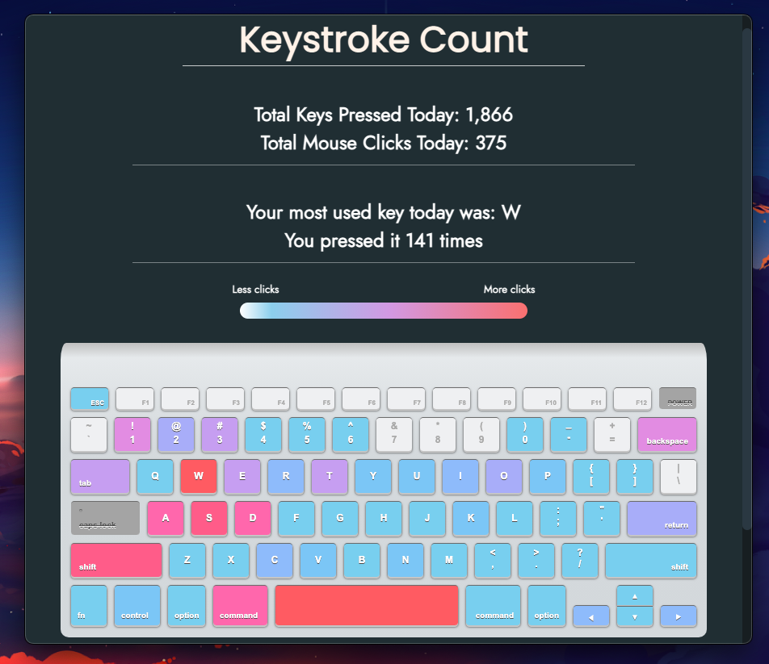

Keystroke Count keeps all your keystroke data locally stored and NO data including your keystrokes is ever collected.
What is Keystroke Count?
Keystroke Count is an open-source, cross-platform, desktop app that you can use to get data for your keystrokes!
This is Keystroke Count
Keystroke Count preview video 👆
Keystroke Count Home Page 👆